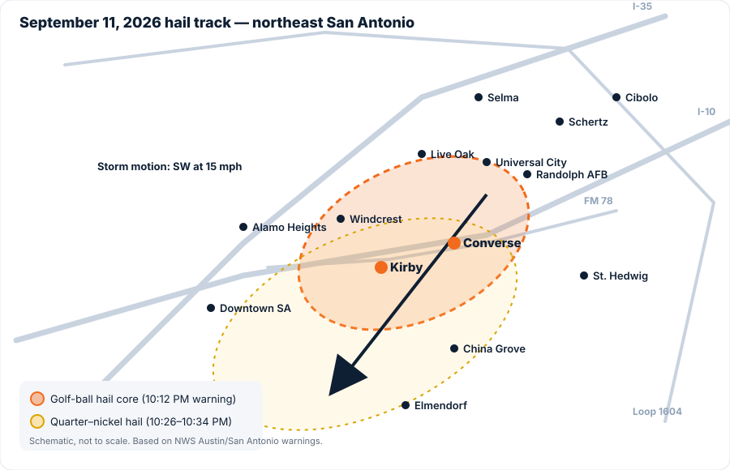

Converse Roofer: hail damage roof repair & roof replacement in Converse, TX
Converse Roofer is the local Converse roofing company homeowners call after a storm. Golf-ball hail hit Converse, Kirby and Windcrest on September 11. Whether you need Converse roof repair, a full roof replacement, or a free roof inspection to find out which, we'll get on the roof, photograph it, and give you a straight answer.
Free Roof Inspection in Converse, TX
No cost, no pressure. A Converse roofer will check your roof, photograph any hail damage, and tell you honestly whether you need roof repair, roof replacement, or nothing at all.

The core of the storm sat right over Kirby and Converse
The first NWS warning at 10:12 PM put golf-ball hail over Kirby, near Converse, moving southwest at 15 mph. If your home is between Loop 1604, I-10 and FM 78, it was under that core. North- and east-facing slopes took the direct hits.
Storm figures from NWS Austin/San Antonio warnings and KENS 5 / KSAT reporting.
Read the full Converse hail storm reportRoof repair, roof replacement and storm damage roofing in Converse, TX
One local Converse roofing crew handles the inspection, the written estimate, and the build. Converse roof repair for hail damage, roof leak repair, emergency roof repair and full roof replacement, all from one phone number.

Free roof inspection
Searching "roof inspection near me" after the storm? A Converse Roofer inspector walks the roof, marks hail hits, checks vents, gutters, screens and AC fins, and hands you a photo report you keep whether or not you hire us for the Converse roof repair.
Book a free roof inspection →
Hail damage roof repair
Converse roof repair for bruised shingles, cracked vents, dented flashing and lifted ridge cap. We document every hit and put the repair in writing before any work starts.
What hail does to a roof →
Roof replacement in Converse, TX
Full shingle roof replacement with architectural or Class 4 impact-resistant shingles, plus metal roofing. Tear-off, decking check, ice-and-water at valleys, new flashing, ridge vent and cleanup.
See Converse roofing projects →
Roof leak & emergency roof repair
Water coming in tonight? Call for emergency Converse roof repair and we'll tarp it first, then trace the leak to its source: flashing, pipe boots, valleys or storm damage.
Call 956-465-6045 now →
Photo reports & written estimates
Every inspection produces a dated, slope-by-slope photo report and a written repair estimate for your Converse roof repair or replacement. It's yours to keep, whatever you decide to do next.
Get a written estimate →
Gutters, metal & more
Seamless gutters, gutter guards, standing-seam metal roofing, skylights, ventilation and decking. From Converse roof repair to a new metal roof, if it's on a Converse home, Converse Roofer works on it.
Get a Converse roofing quote →
Hail damage doesn't leak on day one. It leaks in February.
A golf-ball hailstone hitting a shingle at 60+ mph knocks the protective granules loose and bruises the asphalt mat underneath. The roof looks fine from the driveway. Six months of Texas sun later, those bruises crack, and a small Converse roof repair turns into wet decking, stained ceilings and a much bigger job.
- Bruised shingles keep shedding granules and age faster on every slope that took hits.
- Fresh damage is easy to see and document. Six months later it blends into normal wear and is harder to trace to one storm.
- A free roof inspection from a local Converse roofer gives you a dated photo record either way.

Four steps from "was that hail?" to a finished roof
Free roof inspection
A Converse roofer comes out, gets on the roof, and photographs everything. You get the report the same day.
Written estimate
Repair or replacement, priced line by line with every layer listed, before you decide anything.
Pick your materials
Architectural, Class 4 impact-resistant or standing-seam metal. We price the options side by side so you can choose.
Build it right
Tear-off, decking check, ice-and-water at valleys, new flashing, ridge vent, magnet sweep. Converse roofing done once, done right.
Converse roof repair and roof replacement across the NE side of San Antonio


Looking for a roofer near you in Converse?
If you've been searching for a roofer near me, a roofing company in Converse, TX, or roof repair near me since the September 11 hail storm, here's the short version: Converse Roofer is a local Converse roofing contractor, not a storm-chasing crew from out of state. We do free roof inspections, hail damage roof repair, roof leak repair, emergency roof repair, and full roof replacement for homes in Converse, Kirby, Windcrest, Universal City, Live Oak, Schertz, Cibolo, Selma and St. Hedwig.
Converse roof repair
Not every hail-hit roof needs replacing. Converse roof repair covers bruised or cracked shingles on one slope, damaged pipe boots and vents, lifted ridge cap, and flashing that's letting water in. We tell you when a repair is the right call and when it isn't, and we put both in writing.

Roof replacement in Converse, TX
When the hit count on the test squares says replacement, we handle the whole Converse roofing job: tear-off, decking, synthetic underlayment, ice-and-water shield, drip edge, starter, architectural or Class 4 impact-resistant shingles, ridge ventilation and a magnet sweep of the yard. Ask about Class 4 impact-resistant shingles before you pick a product.

Emergency roof repair and roof leak repair
Active leak, missing shingles, tree limb through the decking? Call the number at the top of this page. Emergency Converse roof repair starts with a tarp the same day, then a proper fix once the weather clears.
Storm damage roofing
Hail damage Converse roof repair and wind damage repairs are most of what a Converse roofer does in a year like this one. We know what NWS reported for the September 11 storm, we photograph the collateral damage on vents, gutters and screens, and we put the repair cost in writing. Read our Converse hail storm report or what a proper roof replacement includes.
Outside Converse? See our pages for Kirby & Windcrest, Universal City & Live Oak, Schertz, Cibolo & Selma, St. Hedwig and northeast San Antonio.
Straight talk about hail and Converse roof repair

What Golf-Ball Hail Actually Does to a Shingle Roof (With Photos)
Golf-ball hail hit Converse on September 11. Here's what 1.75-inch hail does to asphalt shingles, why the damage hides for months, and what an inspector looks for.
Read more →What's in a Proper Roof Replacement: 7 Layers Your Estimate Should List
A roof is more than shingles. Here are the seven layers a complete Converse roof replacement includes, what each one does, and how to read a roofing estimate line by line.
Read more →
7 Questions to Ask Before You Sign With a Roofer After a Hail Storm
Out-of-town crews are already knocking doors in Converse and Kirby after the 9/11 hail storm. Ask these seven questions before you sign anything.
Read more →


Converse roofing FAQ
My roof looks fine from the ground. Do I still need a roof inspection?
Yes. Hail bruising on asphalt shingles is almost impossible to see from the driveway. The tell-tale signs are on the roof itself: granule loss, soft spots in the mat, dented vents and dinged gutter lips. A free roof inspection from a Converse roofer settles it in 45 minutes.
How much does Converse roof repair cost?
It depends on what's damaged. A pipe boot or a handful of shingles is a small job. Slope-wide hail damage is usually a replacement conversation. Converse Roofer gives you a written price for any Converse roof repair before work starts, free.
How much does a roof replacement cost in Converse?
Roof size, pitch, layers to tear off, decking condition and the shingle you choose all drive the price. Get a free inspection and we'll quote repair and replacement side by side.
Do you offer emergency roof repair in Converse?
Yes. If you have an active leak or storm damage, call 956-465-6045. We tarp first to stop the water, then schedule the permanent Converse roof repair.
Are you a local Converse roofer or a storm chaser?
Local. Converse Roofer is based in Converse, TX, with a local number that still works after the out-of-town trucks leave. Ask for our insurance certificate and references; we expect it.
How long does a roof replacement take?
Most Converse homes are a one-day tear-off and re-roof. Larger, steeper or multi-layer roofs can run two days. The schedule is on the written estimate.
What if you find rotten decking?
Decking replacement is priced per sheet on every estimate, and we show you the soft or rotten sheets before replacing them. No surprises on the final bill.